Course: Fantasy & Religion
Lecture #2: Background in Classical & Romance
Background in classical epic:
We have discussed the basic "monomyth" and its elements. Now we need to look at more specific sources for these stories.
In the literature of the classical epic the dual themes of war and quest are generally kept quite separate. Homer used the two stories that are still extant with these themes. the Iliad's theme was war, the Odyssey, the adventures of the hero (quest) to get home. There apparently were many other epics in this cycle that we no longer have access to.
EPIC has been defined as a long, serious poem in an elevated style, relating a series of heroic achievements or events. The Greek word Epikos meant a "speech, tale or song" thus, it also was something meant to be recited.
EPICS: were in existence long before Homer. One of the oldest and greatest is the Epic of Gilgamesh and has been called the first great poem in the world. It dates back at least to before 2000 BCE and it is a fantasy.
It is basically about the search for immortality which even the great Gilgamesh could not achieve. (a snake ate the plant which would have given him immortality)
Some of the elements visible in modern fantasy writers works can be seen as far back as these cyclic poems: the world conception, a sprawling landscape with fantastic wars and imaginary places, inhabited by ferocious and fantastic monsters and curious peoples, dominated by divinities of superhuman powers.
The concept of the story laid amid purely invented surroundings had been born. Most the rest of classical literature pursues very different concepts. Personal love lyrics, history, art criticism, letters, dramas based on semi-imaginary history of a nation or city--all was involved. Only the in the epic was imagination permitted to run free. and in these long poems about heroic adventures, weird cities, etc. the notion of fantasy was born.
EPIC OF GILGAMESH
Because it is the prototype for virtually all myths of adventure and quest, I am going to give a summary of the myth and some background.
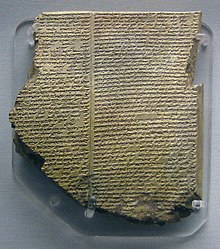
The received text of the Gilgamesh epic was written down on a series of 12 clay tablets inscribed in cuneiforms text used by the Sumerians, the Babylonians and the peoples of Assyria. Fragments have been found at many sites, including Hittite and Hurrian, both Indo European groups. It had to have been composed before 1800 BC as Marduk is not mentioned and his cult became the state religion under King Hammurabi.
The earliest versions stem from Sumerian texts of the late third millennium BC at which time it was probably not a continuous story, but a series of episodes in which Gilgamesh took a prominent part.
The historical position is firmly established by an episode in the Sumerian version of the story, which tells of a battle between Gilgamesh and Agga, King of Kish, a name found on the king lists.
From the poem we learn that Gilgamesh was a renowned and powerful king who had built the great walls of Erech, one of the most extensive cities of Sumer. Gilgamesh was an arrogant, oppressive and philandering ruler who had exasperated his subjects. In response, an appeal was made to the gods for a champion who would contend for their rights against the headstrong oppresser within their city.
ENKIDU was the champion elected to liberate Erech. He was a Sumerian wild man who lived with animals. He was seduced by a courtesan and he developed a taste for bread and strong drink.
On entering Erech he engaged in a wrestling match with Gilgamesh but after honor was satisfied, the two became firm friends and decided to embark on an adventure together.
In a mountain of Cedars, they sought out the demon Humbaba and slew him. The two friends returned in triumph to Erech and the goddess Ishtar became enamored of Gilgamesh.
Unwisely, he spurned her advances. The goddess scorned and enraged, induced the high god Anu to send down an avenging bull to trample the city but Enkidu killed it, thereby sealing his own doom. He is killed and an expensive funeral ensues.
Gilgamesh began to fear for his own life and resolved to go on a journey in search of the secret of immortality, even though we are told (tablet nine) that he is two thirds god/one third man. He made a dangerous journey trying to find Umnapishtim, the Sumerian Noah who, as he hoped, would reveal the secret of his immortality to him.
He was advised by the sun god that it was a vain quest and advised him to seek what pleasures he could in life. "day and night be thou merry, make every day a day of rejoicing"
Tablet 11, the famous deluge tablet, tells the flood story which may well reflect an historical event perhaps going back to at least 3000 BC. (Black Sea?)
With the advice of a ferryman Gilgamesh weighs his feet down with stones and dives into the sea and discovers a plant like a thorn, which will give perpetual youth. His triumph is short lived, for on his way home, while drinking by a pool, a serpent robbed him of his trophy and stole the secret of eternal life.
FANTASY IN THE CHANSON DE GESTE:
After the epic poetry of Greece, with the death of Alexander the Great, there were attempts to write and re-write the great epics. however, they were not able to prevent the death of Greek as the grand epic language.
The Epic impulse traveled to Rome where the Odyssey was translated into Latin in the last half of the 3rd cent. BC. This was considered the beginning of the epic in the Roman world.
Latin poetry begins with Ennius, about 240 BCE with his Annals which traced the history of Rome from the beginning to his own lifetime. However, for the most part, Roman epics were just plain dull, with attempts to imitate Homer and Virgil.
The Epic didn't reappear until after the time of Charlemagne. BEOWULF, the Anglo-Saxon epic poem, was written down in the dialect spoken in 11th century Wessex from an original probably composed in Northumbria at the end of the 7th century AD.
It is considered the first great work of British literature and is based on actual history. Beowulf himself is now considered an historical personage, though we know little about him other than the fact that he fought with his chief, Hygelac, in an actual raid against the Franks and Frisians about 520 AD.
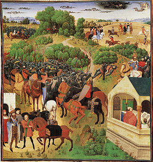
France produced the Chanson de Roland, an anonymous 11th cent French epic and has been called the first good poem of any scope in French lit. Like Beowulf, Roland is a historical figure--we know of a count Hrodlandt of the Breton Marches, who fell at the historical battle of Roncesvalles, fought on August 15, 778. Roland is listed as a nephew of Charlemagne.
There are of course the legends of Charlemagne himself. Roland was one of the paladins who surrounded Charlemagne, just as the knights of the round table were around King Arthur in the cycle of stories associated with him.
These epic poems became so popular that the troubadours were kept busy inventing prequels and other tales or cycles of chansons, or songs of deeds of various heros. Over 100 French epics grew up around the figure of Charlemagne, though only Roland and one or two others have ever been translated into English.
In Spain, Poema de mio Cid, a work of unknown authorship which dates from the mid 12th century became the Spanish answer to the epic. It celebrates the historical warrior Ruy Diaz de Bivar (1040-1099 also known as “El Cid”), who fell fighting the moors like the Frankish knight, Roland.
FANTASY IN MEDIEVAL ROMANCE:
These are called "Romances" because they were written in one of the romance languages, i.e. Spanish, French, or Italian which grew out of the Latin, or "Roman" language.
These were wildly popular throughout the Middle Ages and so numerous that the result is a heroic literature much larger both in size and influence then the Grecco Roman epic literature.
Borrowed from the heroic literature are the larger-than-life hero, heroine, and villain, as well as a strong element of the supernatural, the occasional act of divine intervention and preoccupation with the dual epic themes of quest and warfare as standard plot motifs.
The romance brought in story material that was not known to the formal epic and was even alien to it. One of these new features is the archetype of the wizard or the magician. It was the romance that popularized them.
Another new element is the use of magic per se. There were supernatural things in the epics but largely of such fantastic monsters and hybrids as the Hydra and the occasional conjuring up of the spirits of the dead, or the appearances and actions of the gods and immortals.
Magic--i.e., the powers of witch and wizard, the employment of charmed weapons, spells and talismans and the like--was foreign to the spirit of the classical epics, which were considered religious works (Homer was most certainly regarded by the Greeks as the "Old Testament" of their religion.
Thus, one could say that the epic has been debased into the romance. Magic is, after all, a debasement of religion, in which the charm is substituted for the prayer.
Most the romances dealt with European folklore such as the Arthurian cycle, the Charlemagne cycle, and the fabulous history of Alexander the Great, who became a wonder-working knightly hero to the medieval writers.
The foremost place among the romances is held by Amadis of Gaul, one of the most delightful fantasies ever written and one of the most influential books of all time--so influential that an entire literature sprang from it and its influence can be seen to this day.
Originally probably in Portuguese, though not sure, dating from the 13th century by a knight Joao de Lobeira from Galicia. The world is simple and splendid: strange palaces, enchanted forests, evil sorcerers, perilous gorges beneath castle crested hills. Hideous giants who dwell in the far-off peaks of dragon haunted mountains, etc.
It is about the knight Amadis, son of a king, who is raised by a lonely Scots knight in ignorance of his kingly heritage. He becomes one of the boldest heroes at the court of King Lisuarte of Briton and falls in love with Oriana the Fair. Strange forces move about him. He is the focus of the powers of good and evil.
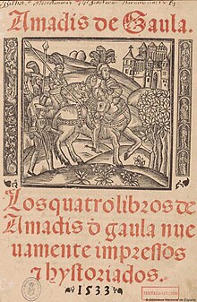
The four books of Amadis of Gaul are filled with knightly quests, dangerous voyages, ferocious battles and invasions, intrigue and treachery. Finally, Amadis and Oriana wed, he is restored to his long-lost parents, and the story comes to a dramatic conclusion with the destruction of Archelaus, the evil magician.
The story was so ingenious, so filled with peril, magic and mystery and either so unlike anything that had been written before it or so clearly superior to its predecessors that it became enormously famous. This even includes the Arthurian romances, which were good, and popular, but not of the same quality.
Because of its popularity, beginning in 1500, more books were published following Amadis sons, grandsons, etc. and went into a total of 12 books, covering several generations of his family.
It grew from one volume to half a library shelf being at least 3 times the length of the Tolkien trilogy and ten times as complicated. This of course, spawned numerous imitations each trying to outdo the other, hopelessly confusing the entire literary movement.
Cervantes was a severe critic of the turn this had taken and seriously lampooned the whole ridiculous school in Don Quixote, though he praised the original, by it being one of three books saved from Don quixote's bookshelf. He said: "this is the best of all the books of this kind that have ever been written."
The whole romance genre became corrupt very swiftly, partly owing to the need of every romancer to outdo his brethren in the craft with more violent excesses, and partly because of radical transplantation of a corpus of national folklore from one culture to another, where it was crudely and forcibly grafted onto the native product.
For example, when the Italian school began writing pseudo-Arthurian romances. The Arthurian romance itself was a conglomerate outgrowth of various elements from Celtic, Welsh, British and French folklore. When the Italians began mixing Merlin and Charlemagne and Amadis in the same tale and injecting alien plot elements, some amazing oddities resulted. The coup de grace was given to the whole romance movement in 1605 with Don Quixote.
"On fairy stories" - Tolkien's essay
Now that we have looked at mythology and fairy tales and legends in a general way I want to deal with an essay written by JRR Tolkien in 1938 as part of a lecture series and then enlarged for a volume of essays dedicated to Charles Williams who died in 1945.
Early in the essay Tolkien establishes the point that most so-called fairy stories do not in fact have any fairies in their cast of characters. Rather, the stories are about the universe of Fairy itself. he says: "most good 'fairy stories' are about adventures of men in the perilous realm or upon its shadowy marches.
He also points out that the marvels and fantastic elements in a valid fairy story must be true. That is, the author cannot take refuge in the plot device of "it was all a dream". Magic and miracles of the fairy tale have to be presented as true.
He goes into the connections among fairy stories, mythology and religion and the connections between history and mythology, drawing the conclusion that history often resembles myth or legend because both are ultimately formed from the same stuff.
He demolishes the idea that Fairy tales are only for children and the concept that the relegation of the Fairy tale to the nursery is merely an accident in our domestic history.
The suspension of disbelief is absolutely vital to the readers enjoyment of any work of fantastic art, whether it be poem, story, or whatever. as he says:
"The writer’s skill in making his fabricated world complete and realistic and self-consistent in every last detail is the more important element in a genuine (and successful) fairy story or fantasy."
"What really happens is that the story maker proves a successful 'sub-creator' in a successful story.
"He makes a secondary world which your mind can enter. Inside it, what he relates is 'true': it accords with the laws of that world."
The worlds must be self-consistent and in agreement with their own natural laws, even though these laws may frequently be at enormous variance with those of our own world, in which we live our daily lives.
Building this 'secondary world' is the goal of all art and is best achieved, he believes, thru the medium of the fantasy tale. Fantasy aspires to the elvish art of enchantment. It should enlarge and underscore our appreciation of the real world, the primary world.
The mark of true fantasy, the seal of authenticity by which it can be differentiated from bogus and imitation, is the quality of JOY. The joy of the maker in the thing that s/he has made; the joy of the reader who has fallen under the spell of the sub creator.
This quality of joy is largely dependent upon the inner consistency of the story. How can what is true, reality, inner consistency be placed in juxtaposition with fantasy, which we usually think of as being formed from unreality? "The peculiar quality of the "joy" in successful fantasy can thus be explained as a sudden glimpse of the underlying reality or truth."
MODERN FANTASY
THE INVENTION OF MODERN FANTASY:
As we have seen, all the elements of heroic or epic fantasy are found in the
world's mythology and legends. The concept of imaginary worlds or lands in which magic works and "gods, ghosts, and gorgons" dwell.
The twin themes of the wandering adventurer or quest hero and the war between opposing forces. These elements were to be drawn together from epic, saga and romance and to reintroduce them into modern fiction.
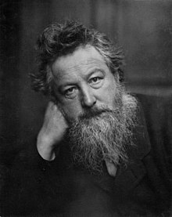
WILLIAM MORRIS: was one of these eccentric Englishmen with an artistic temperament born in 1834, three years before Victoria came to the throne. He was a political reformer, hard-working and practical minded who, during the difficult days when the industrial revolution was beginning to change a way of life, became disenchanted with his own era.
He looked back to the Middle Ages as a time of utopian, unspoiled countryside, great peoples, wise kings, etc. In other words, he saw a Middle Ages that had never been. He ignored the fact it was a time of superstition, ignorance, disease, etc. To him it looked like a rose and golden world, and he dreamed of restoring it.
Morris dabbled with everything from architecture, wood carving and metal work. He even illustrated, designed and printed his own books. He was a poet, writing a poem The Defense of Guinevere now recognized as one of the great Victorian poems. He also translated some of the Icelandic sagas into English.
In harkening back to the Middle Ages Morris discovered the old romances and Grail quest stories and drew upon them for the style and substance of his own novels. This was not new, as other medieval romances had been done. However, where Morris differed from Sir Walter Scott was in giving to his medieval romances not settings of historical eras, but imaginary settings.
The novels of William Morris were laid in worlds of his own invention, and this was the decisive innovation. For while his fiction combined much of the early romanticism of Scott Morris was writing something that was basically different from either the historical novel or the novel of supernatural horrors. He had invented The heroic fantasy novel.
His prose style was essentially different from other novelists as well. It was simple and lucid with a flavor of the high, heroic days of chivalry and splendor modeled directly on the romances and grail quests.
He founded a tradition of his own. His novels are set in strange, uncanny, adventurous worldscapes of magic and heroism, sometimes idyllic, sometimes touched with shadowy horror, but always new and original beyond knowledge, worlds out of space and time, in hazy romantic landscapes not to be found on any map, in eras which no history lists.
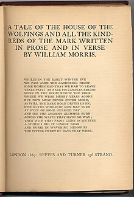
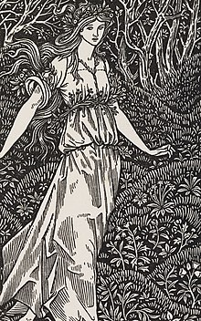
What Morris had done was to go Scott and the other historical novelists one better by telling a tale of earlier days in the vary style and tradition of those days. In novels like The House of the Wulfings (1889), The Wood Beyond the World (1895), The Well at the World's End (1896), and The Water of the Wondrous Isles (1897), He created immense and curious Worldscapes thronged with marvelous cities and strange beasts, peopled with powerful enchantresses and valiant bandits, with young knights-errant of courage and courtesy, bound on long and perilous quests and curious adventures.
In adopting the language and tone of a more remote epoch, Wm. Morris also adopted the supernaturalism and magic of such an epoch and in so doing he laid the foundations of modern fantasy literature.
Morris's novels are immense, sometimes up to 300,000 words. Epic in scope and concept, written with richness and dignity, they are tales of heroic adventure and mighty deeds bearing a distinct resemblance to Tolkien's trilogy.
U Tube; Wm. Morry Socialism and his influence on Tolkien 2:42 min
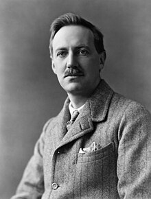
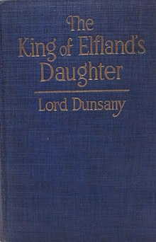
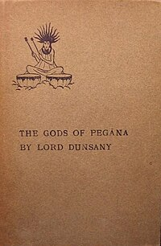
LORD DUNSANY:
When Morris died in 1896, his direct literary descendent was a young Irish nobleman, Edward Plunkett, who was 18 at this time. He was the 18th baron in his line from the Norman Conquest and was to become the famous author of many novels, plays, volumes of autobiography, essays, verse, collections of short stories, and a translation of the Odes of Horace. He wrote 60 books in all.
He wrote only a few fantasy novels, of which his finest is The King of Elfland's Daughter (1924). Most of his important work in heroic fantasy lay in the field of short story. He published several collections beginning with The Gods of Pegana in 1905 and followed by four other collections fairly quickly.
No one with any pretensions toward having a good acquaintance with modern fantasy literature can afford to pass them up. Dunsany was not only a born storyteller, but the master as well of a splendid prose style that is a joy to read.
Some of his best fantasies have such titles as The fortress unvanquishable, The Sword of Welleran, How One Came, as was foretold, to the City of Never, and The Distressing Tale of Thangobrind the Jeweler.
His tales are laid in fabulous lands "at the edge of the world" or at least "beyond the fields we know" and are drawn from Icelandic saga and medieval romance and are in part inspired by the older tales in Herodotus and the Bible.
A leading contemporary fantasy writer and critic, L. Sprague de Camp, has written the Lord Dunsany probably had the greatest influence on fantasy writers of any writer during the first half of this century. This even though he did not win a very large readership and never wrote a "best seller." He was a writer’s writer.
His influence on the next generation or two of fantasy writers was immense. Some, such as H.P. Lovecraft, slavishly imitating Dunsany in a number of short stories. Many others such as Robert Howard (Conan) and Jack Vance show unmistakable Dunsinane influence.
YouTube: Lord Dunsany tribute - 4:48 min
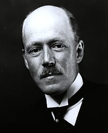
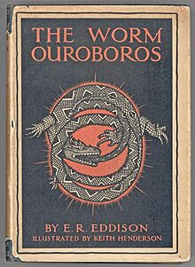
ERIC RUCKER EDDISON: Born in 1882 in Yorkshire, he became a successful British civil servant. However, he had no love for the 20th century and his passion lay with the great Norse age and sagas. In 1937, at age 55, he retired and devoted the remainder of his life --10 years-- to creating some of the most remarkable prose romances in the English language.
His first novel The Worm Ouroboros was written in 1922 and shows his love for Scandinavian myths and the influence of Wm. Morris. It is a richly, colored world vaguely identified with the planet Mercury, but we are not intended to take that seriously.
The plot--the dual themes of quest and war-- are very close to Tolkien. The story is about the great war between the Lords of Demonland and King Gorice XII of Witchland. While the Lords of Demonland attempt to rescue one of their brothers who has been imprisoned, the legions of Witchland ravish their realm in their absence.
When the demon lords return, they drive the warriors of Witchland from their holdings and rescue their brother. They finally win against Witchland with a glorious victory. It is hollow for they are now without worthy adversaries for their heroic manhood. At the end, the high gods bestow a might miracle upon the heroes: time turns back again, and like the Ouroboros of the title, a serpent devouring its own tail, a circle without beginning or end, the tale begins again.
The Worm got good reviews and was a considerable success for a novel of 462 pages, buttressed with scholarly appendices and chronologies. After its British edition, it was published in NY in 1926, reprinted in hardcovers in 1952 and revived in paperback by Ballantine Books in 1967.
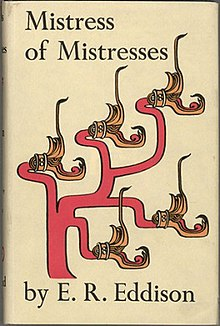
Eddison went on to write his Zimiamvian trilogy, never completed because of his death. But those portions of the last volume completed, together with drafts and notes, were assembled into a volume and issued 13 years after death.
This series were not nearly as successful as the worm, and were confusing at best. Beyond these four novels, Eddison also produced a rousing historical novel of the Viking age called Styrbiorn the Strong (1926). He also did some direct translations of sagas such as Egil's Saga.
Eddison had a profound influence on later fantasy writers and won many ardent supporters. Even C.S. Lewis praised The Worm in extravagant terms.
Fletcher Pratt, known as a Civil War historian, has even written some fantasy adventures involved in Norse myth and Irish legend. His first and finest epic fantasy, The Well of the Unicorn (1948) clearly shows the unambiguous influence of Wm. Morris and E. R. Eddison and Lord Dunsany. Elements of all these writers are present in his book. The Blue Star (1952) eschews the heroics of the first novel and provides a calm world based on Maria Theresa's 18th cent. Austrian empire.
Then there is MERVYN PEAKE whose remarkable Gormenghast Trilogy was not truly in the same line of descent as Tolkien’s work but is comparable to the Lord of the Rings in its rich, imaginative fertility, scope, depth, and range, if not for its mastery of prose.
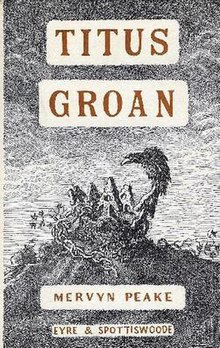
Mervyn Peake was a British poet, playwright, novelist and illustrator, illustrating his own books. In 1946 he published Titus Groan about a mist shrouded world, bleak barren and desolate and an inconceivably immense castle of Gormenghast. The Castle seems to be the only edifice on this planet where for thousands of years the Earls of Gormenghast have ruled.
Peake has constructed a closed world, a world in miniature, to explore the roots of human character thru the knotted, tangled, intricately interwoven lives of the scores of odd, deformed, subtle, monstrous or decadent creatures who inhabit the gigantic castle.
He tells no real story but explores the ways in which characters interact with each other. His nightmarish castle forms the setting for a dark, dramatic, complex narrative that holds the reader enthralled and spellbound.
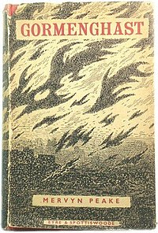
A sequel, Gormanghast appeared in 1950 and a rather unsatisfactory third novel in 1959 Titus Alone. Peake is the literary heir of the Brontes, with their foggy moors and stormy passions. Certainly of Kafka, as a glance of the castle demonstrates.
Together with Wm. Morris, Lord Dunsany, Eric Rucker Eddison and the writers whom they influenced and continue to influence created the tradition of the epic, heroic fantasy romance--the precise tradition to which The Lord of the Rings belongs in every way. To a lesser extent, so do the writings of Charles Williams and C. S. Lewis to whom we will turn in the next two weeks.